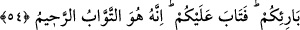

Üftâde hazretleri bu konuda şöyle demiştir: “Mûsâ (a.s.)’ın Rabbi ile kırk gün
süreyle vakit tayin edip sözleşmesi gibi bir olay, Peygamber Efendimiz hakkında vâkî
olmamıştır. Ancak Efendimiz, Ramazan ayının son on gününü i’tikâfla geçirirdi.
Halvetiye tarîkatı kırk günlük çile çıkarmayı Mûsâ (a.s.)’dan almışlardır. Zira Mûsâ
(a.s.) Tûr’da kırk gün ibâdetle meşgul olmuştur.” Şeyh Hüdâyî hazretlerinin Vâkıât’ında
böyle yazılıdır.
et-Te’vîlâtü’n-Necmiyye’de şöyle denilmiştir: Şükür, söz, amel ve hâl ile olmak üzere
üç çeşittir. Söz ile şükür, insanın nimeti nefsinde gizlice, başkalarının yanında açık
olarak anması, Rabbine ihtiyaç arzetmesiyle olur. Zira Allah Teâlâ: “Rabbinin
nimetine gelince, onu minnet ve şükrânla an!” (ed-Duhâ, 93/11) buyurmaktadır.
Peygamberimiz de “Nimeti anmak şükürdür”[281] buyurmuştur.
Amel ile şükür, Allah’ın nimetlerini O’nun râzı olduğu yerlerde sarfedip isyan
yolunda kullanmamak; yapamadığı ibâdetleri telâfî etmeye çalışıp günahlardan yüz
çevirmekle olur. Zîrâ Allah Teâlâ: “Ey Dâvud âilesi! Şükredin” (Sebe’ 34/13)
buyurmaktadır.
Hâl ile şükre gelince, kulun gönlüne “Şekûr” sıfatıyla tecellî edip nimeti de; şükretme
gücünü de verenin Allah olduğunu görmektir. Böylece kul, nimetin de, şükrün de
Allah’dan geldiğini bilir. Nimet vereni nimette görür; nimeti nimet verenden bilir.
Şekûr’ü şükürde görür, şükrün Şekûr’den olduğunu bilir. Kul, varlığını ve şükrünü,
Allah’ın nimetlerinden iki ihsân olarak görür. Böylece nimeti görmek kul için ayrı bir
nimet olur. Kulun vücûdu, Allah’ın “Cemâl” ve “Şekûr” sıfatlarının aynası hâline gelir.
Kulun nimeti vereni ve nimetleri görmesi, ayrı bir nimettir; şükrü gerektirir. Sonsuza
dek devam edecek olan bu durumda kul, Allah’a hakkıyla şükredemeyeceğini; belki
çokça şükredenlerin O’na şükretmiş olacağını anlar. Allah Teâlâ: “Kim bir iyilik
işlerse onun sevâbını artırırız. Şüphesiz Allah bağışlayan (iyiliğe) karşılık
verendir.” (es-Şûrâ, 42/23) buyurmaktadır.
54. Mûsâ kavmine demişti ki: Ey kavmim! Şüphesiz siz, buzağıyı (tanrı)
edinmekle kendinize kötülük ettiniz. Onun için Yaradanınıza tevbe edin de
nefislerinizi (kötü duygularınızı) öldürün. Öyle yapmanız yaratıcınızın katında sizin
için daha iyidir. Böylece Allah tevbenizi kabûl etmiş olur. Çünkü acıyıp tevbeleri
kabûl eden ancak O’dur.
Ey İsrâîloğulları! Buzağıya tapınan kavmine Mûsâ’nın şunları söylediği zamanı
hatırlayın ki bu hitab Allah’ın onlara beşinci lütfudur. Âyette Mûsâ (a.s.)’ın kavmine: